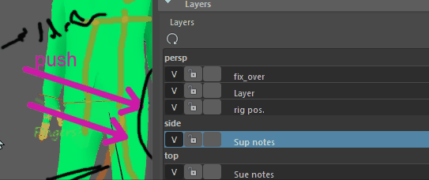

使用 Blue Pencil 层管理器(Blue Pencil Layer Manager)控制每个层的特性。可以创建、删除、隐藏、重新排列层。
打开 Blue Pencil 层管理器(Blue Pencil Layer Manager)
- 双击工具箱(Tool Box)的“上次使用的工具”(Last Used)区域中的“Blue Pencil”图标
 ，以打开 Blue Pencil 工具设置，然后向下滚动到“层”(Layers)区域。
，以打开 Blue Pencil 工具设置，然后向下滚动到“层”(Layers)区域。
将层添加到“Blue Pencil”层管理器
- 在场景中绘制。如果不存在层，将为当前摄影机视图创建层。
- 也可以单击“添加新层”(Add New Layer)图标 。

层将分组到指定给它们的摄影机下。层在层管理器中的排列方式与按视口绘制顺序的显示方式相同。例如，层管理器顶部的层在视口中显示为顶层。
在视口中显示或隐藏“Blue Pencil”层
单击“可见性”(Visibility)图标 (V) 以显示或隐藏关联的层。
锁定层以防止编辑或解锁层以允许编辑
在关联层上单击“锁定”(Lock)() 或“解锁”(Unlock)()，以切换是否可以编辑选定层。
将层重新指定给其他摄影机
在 Blue Pencil 层管理器(Blue Pencil Layer Manager)中的层上单击鼠标右键，选择“将层移动到:”(Move Layer To:)，然后选择其他摄影机。
注： 如果单击摄影机的标题栏并选择“将所有层移至:”(Move All Layers To:)，则可以将所有层重新指定给一个摄影机。
删除指定给摄影机的层

“摄影机”(Camera)标签
在“Blue Pencil”层管理器中的摄影机名称上单击鼠标右键，然后选择“从 <x> 摄影机中删除层”(Delete Layers from <x> Camera)。
重命名层
双击层，然后输入新名称。